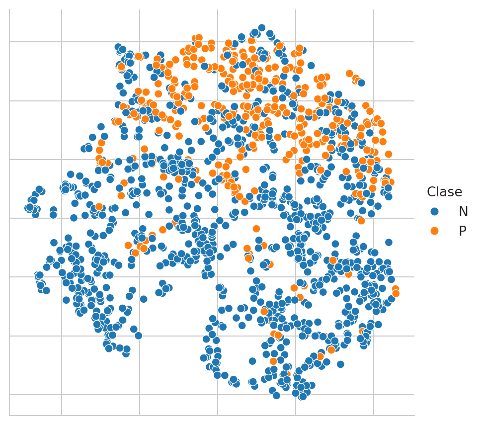

from EvoMSA import DenseBoW
from microtc.utils import tweet_iterator
from IngeoML import SelectFromModelCV
from sklearn.metrics import recall_score
from wordcloud import WordCloud
import numpy as np
import pandas as pd
import umap
import textwrap
from matplotlib import pylab as plt
import seaborn as sns
import plotly.express as px9 Visualización
El objetivo de la unidad es
Paquetes usados
9.1 Introducción
El conjunto de datos se puede conseguir en la página de Delitos aunque en esta dirección es necesario poblar los textos dado que solamente se encuentra el identificador del Tweet.
Para leer los datos del conjunto de entrenamiento y prueba se utilizan las siguientes instrucciones. En la variable D se tiene los datos que se utilizarán para entrenar el clasificador basado en la bolsa de palabras y en Dtest los datos del conjunto de prueba, que son usados para medir el rendimiento del clasificador.
fname = 'delitos/delitos_ingeotec_Es_train.json'
fname_test = 'delitos/delitos_ingeotec_Es_test.json'
D = list(tweet_iterator(fname))
Dtest = list(tweet_iterator(fname_test))9.2 Representación
dense = DenseBoW(lang='es', dataset=False,
emoji=True, keyword=True,
voc_size_exponent=15,
estimator_kwargs=dict(dual='auto'))kwargs = dict(estimator=dense.estimator_class(**dense.estimator_kwargs),
scoring=lambda y, hy: recall_score(y, hy))
_ = dense.select(D=D, feature_selection=SelectFromModelCV,
feature_selection_kwargs=kwargs)
X_dense = dense.transform(D) 9.3 Proyección con UMAP
reducer = umap.UMAP(n_neighbors=5)
low_dim = reducer.fit_transform(X_dense)Código
df = pd.DataFrame(low_dim, columns=['x', 'y'])
df['Clase'] = ['P' if x['klass'] else 'N' for x in D]
df['text'] = [x['text'] for x in D]
fig = sns.relplot(df, kind='scatter', hue='Clase', x='x', y='y')
fig.tick_params(bottom=False, top=False,
left=False, right=False,
labelbottom=False, labelleft=False)
fig.set(xlabel=None, ylabel=None)
dense.fit(D)
X_dense = dense.transform(Dtest)df_dis = dense.decision_function(Dtest).flatten()Código
df = pd.DataFrame(reducer.transform(X_dense), columns=['x', 'y'])
df['Distancia'] = df_dis
acc = np.r_[[x['klass'] for x in Dtest]] == np.where(df_dis >= 0, 1, 0)
df['Acierto'] = acc
df['text'] = ['<br>'.join(textwrap.wrap(x['text']))
for x in Dtest]
df['Clase'] = ['P' if x['klass'] else 'N' for x in Dtest]
fig = px.scatter(df, x='x', y='y',
color='Distancia',
custom_data=df)
fig.update_traces(marker_symbol=['circle' if x else 'x' for x in acc],
hovertemplate='Acierto: %{customdata[3]} <br>Clase: %{customdata[5]} <extra>%{customdata[4]}</extra>',
selector=dict(type='scatter'))
fig.update_layout(yaxis={'visible': True, 'showticklabels': False},
xaxis={'visible': True, 'showticklabels': False},
xaxis_title=None, yaxis_title=None)
fig.show()